Get Started
get_started.RmdQuickstart
In this vignette we will show how to get started with
mlr3torch by training a simple neural network on tabular
data. We assume that you are familiar with the mlr3
framework, for a detailed description see e.g. the mlr3 book. As a first example,
we will train a simple multi-layer perceptron (MLP) on the well-known
“mtcars” task. We first set a seed for reproducibility, load the library
and construct the task.
set.seed(314)
library(mlr3torch)
task = tsk("mtcars")
task$head()
#> mpg am carb cyl disp drat gear hp qsec vs wt
#> 1: 21.0 1 4 6 160 3.90 4 110 16.46 0 2.620
#> 2: 21.0 1 4 6 160 3.90 4 110 17.02 0 2.875
#> 3: 22.8 1 1 4 108 3.85 4 93 18.61 1 2.320
#> 4: 21.4 0 1 6 258 3.08 3 110 19.44 1 3.215
#> 5: 18.7 0 2 8 360 3.15 3 175 17.02 0 3.440
#> 6: 18.1 0 1 6 225 2.76 3 105 20.22 1 3.460Learners in mlr3torch work very similary to other
mlr3 learners. Below, we construct a simple multi layer
perceptron for regression. We do this as usual using the
lrn() function and specify its parameters: The hidden
dimension is set to 50 and the number of layers to 2. For training, we
set the batch size to 32, the number of training epochs to 30 and the
device to "cpu". For a complete description of the
available parameters see ?mlr3torch::LearnerTorchMLP.
mlp = lrn("regr.mlp",
# architecture parameters
d_hidden = 50, layers = 2,
# training arguments
batch_size = 32, epochs = 30, device = "cpu"
)
mlp
#> <LearnerTorchMLP[regr]:regr.mlp>: My Little Powny
#> * Model: -
#> * Optimizer: adam
#> * Loss: mse
#> * Callbacks: -
#> * Parameters: layers=2, d_hidden=50, p=0.5, activation=<nn_relu>,
#> activation_args=<list>, batch_size=32, epochs=30, device=cpu,
#> measures_train=<list>, measures_valid=<list>, drop_last=FALSE,
#> shuffle=TRUE, num_threads=1, seed=random
#> * Packages: mlr3, mlr3torch, torch
#> * Predict Types: [response]
#> * Feature Types: integer, numeric
#> * Properties: -We can use this learner for training and prediction just like any other regression learner. Below, we split the observations into a training and test set, train the learner on the training set and predict the test set. Finally, we compute the mean squared error (MSE) of the predictions.
# Split the obersevations into training and test set
splits = partition(task)
# Train the learner on the train set
mlp$train(task, row_ids = splits$train)
# Predict the test set
prediction = mlp$predict(task, row_ids = splits$test)
# Compute the mse
prediction$score(msr("regr.mse"))
#> regr.mse
#> 181.2989Configuring a Learner
Although torch learners are quite like other mlr3
learners, there are some differences. One is that all
LearnerTorch classes have construction arguments,
i.e. torch learners are more modular then other learners. While learners
are free to implement their own construction arguments, there are some
that are common to all torch learners, namely the loss,
optimizer and callbacks.
As these are construction arguments (and not part of the learner’s
ParamSet) they cannot be changed afterwards. The reason for
this is that these construction arguments can themselves have
parameters, which are exposed through the learner’s hyperparameter set.
In the previous example, we did not specify any of these explicitly and
used the default values, which was the Adam optimizer, MSE as the loss
and no callbacks. We will now show how to configure these three aspects
of a learner through the mlr3torch::TorchOptimizer,
mlr3torch::TorchLoss, and
mlr3torch::TorchCallback classes.
Loss
The loss function, also known as the objective function or cost
function, measures the discrepancy between the predicted output and the
true output. It quantifies how well the model is performing during
training. The R package torch, which underpins the
mlr3torch framework, already provides a number of
predefined loss functions such as the Mean Squared Error
(nn_mse_loss), the Mean Absolute Error
(nn_l1_loss), or the cross entropy loss
(nn_cross_entropy_loss). In mlr3torch, we
represent loss functions using the mlr3torch::TorchLoss
class. It provides a thin wrapper around the torch loss functions and
annotates them with meta information, most importantly a
paradox::ParamSet. Such an object can be constructed using
t_loss(). Below, we construct the L1 loss function, which
is also known as Mean Absolute Error (MAE). The printed output below
informs us about the wrapped loss function (nn_l1_loss),
the set parameters, the pacakges it depends on and for which task types
it can be used.
l1 = t_loss("l1")
l1
#> <TorchLoss:l1> Absolute Error
#> * Generator: nn_l1_loss
#> * Parameters: list()
#> * Packages: torch
#> * Task Types: regrIts ParamSet contains only one parameter, namely
reduction, which specifies how the loss is reduced over the
batch.
# the paradox::ParamSet of the loss
l1$param_set
#> <ParamSet>
#> id class lower upper nlevels default value
#> 1: reduction ParamFct NA NA 2 meanThe wrapped torch loss is accessible through the slot
$generator.
l1$generator
#> <nn_l1_loss> object generator
#> Inherits from: <inherit>
#> Public:
#> .classes: nn_l1_loss nn_loss nn_module
#> initialize: function (reduction = "mean")
#> forward: function (input, target)
#> clone: function (deep = FALSE)
#> Parent env: <environment: 0x55c0e4104d10>
#> Locked objects: FALSE
#> Locked class: FALSE
#> Portable: TRUEWe can pass the TorchLoss as the argument
loss during initialization of the learner. The parameters
of the loss are added to the learner’s ParamSet, prefixed
with "loss.". When added to the learner’s parameter set,
the loss’s parameters are prefixed with "loss.".
mlp_l1 = lrn("regr.mlp", loss = l1)
mlp_l1$param_set$params$loss.reduction
#> id class lower upper levels default
#> 1: loss.reduction ParamFct NA NA mean,sum meanAll predefined loss functions are stored in the
mlr3torch_losses dictionary, from which they can be
retrieved using t_loss(<key>).
mlr3torch_losses
#> <DictionaryMlr3torchLosses> with 3 stored values
#> Keys: cross_entropy, l1, mseOptimizer
The optimizer determines how the model’s weights are updated based on
the calculated loss. It adjusts the parameters of the model to minimize
the loss function, optimizing the model’s performance. Optimizers work
analogous to loss functions, i.e. mlr3torch provides a thin
wrapper – the TorchOptimizer class – around the optimizers
such as Adam (optim_adam) or SGD (optim_sgd).
TorchLoss objects can be constructed using
t_opt(). For optimizers, the associated
ParamSet is more interesting as seen below.
sgd = t_opt("sgd")
sgd
#> <TorchOptimizer:sgd> Stochastic Gradient Descent
#> * Generator: optim_sgd
#> * Parameters: list()
#> * Packages: torch
# The paradox::ParamSet of the optimizer
sgd$param_set
#> <ParamSet>
#> id class lower upper nlevels default value
#> 1: lr ParamDbl 0 Inf Inf <NoDefault[3]>
#> 2: momentum ParamDbl 0 1 Inf 0
#> 3: dampening ParamDbl 0 1 Inf 0
#> 4: weight_decay ParamDbl 0 1 Inf 0
#> 5: nesterov ParamLgl NA NA 2 FALSEThe wrapped torch optimizer can be accessed through the slot
generator.
Parameters of TorchOptimizer (but also
TorchLoss and TorchCallback) can be set in the
usual mlr3 way, i.e. either during construction, or
afterwards using the $set_values() method of the parameter
set.
sgd$param_set$set_values(
lr = 0.5, # increase learning rate
nesterov = FALSE # no nesterov momentum
)Below we see that the optimizer’s parameters are added to the
learner’s ParamSet (prefixed with "opt.") and
that the values are set to the values we specified.
mlp_sgd = lrn("regr.mlp", optimizer = sgd)
as.data.table(mlp_sgd$param_set)[
startsWith(id, "opt.")][[1L]]
#> [1] "opt.lr" "opt.momentum" "opt.dampening" "opt.weight_decay"
#> [5] "opt.nesterov"
mlp_sgd$param_set$values[c("opt.lr", "opt.nesterov")]
#> $opt.lr
#> [1] 0.5
#>
#> $opt.nesterov
#> [1] FALSEBy exposing the optimizer’s parameters, they can be conveniently
tuned using mlr3tuning.
All predefined optimizers are stored in the
mlr3torch_optimizers dictionary.
mlr3torch_optimizers
#> <DictionaryMlr3torchOptimizers> with 7 stored values
#> Keys: adadelta, adagrad, adam, asgd, rmsprop, rprop, sgdCallbacks
The third major configuration option are callbacks, which are objects
in mlr3torch that allow you to customize the behavior of
the training process at various stages. They are called at specific
points during training, such as the beginning or end of an epoch.
Callbacks enable you to perform additional actions, such as saving model
checkpoints, logging metrics, or implementing custom functionality for
specific training scenarios.
Callbacks are different from the optimizer and loss as the callbacks
themselves (not only their wrappers) are defined in
mlr3torch. For this reason, there is a more in-depth
coverage of the callback mechanism in a separate vignette (TODO:). For
the purpose of this “get started” guide we will only show how to use
predefined callbacks. The wrapper class is TorchCallback,
while callbacks themselves have class CallbackSet. Below,
we retrieve the predefined "history" callback using
t_clbk(), which has no parameters and merely saves the
training history in the learner.
history = t_clbk("history")
history
#> <TorchCallback:history> History
#> * Generator: CallbackSetHistory
#> * Parameters: list()
#> * Packages: mlr3torch,torchIt wraps the CallbackSetHistory class.
history$generator
#> <CallbackSetHistory> object generator
#> Inherits from: <CallbackSet>
#> Public:
#> on_begin: function ()
#> on_end: function ()
#> on_before_valid: function ()
#> on_epoch_end: function ()
#> plot: function (measures, set = "valid", epochs = NULL, theme = ggplot2::theme_minimal(),
#> clone: function (deep = FALSE)
#> Private:
#> deep_clone: function (name, value)
#> Parent env: <environment: namespace:mlr3torch>
#> Locked objects: FALSE
#> Locked class: FALSE
#> Portable: TRUEIf we wanted to learn about what the callback does, we can access the
help page of the wrapped object using the $help() method.
Note that this is also possible for the loss and optimizer.
history$help()All predefined callbacks are stored in the
mlr3torch_callbacks dictionary.
mlr3torch_callbacks
#> <DictionaryMlr3torchCallbacks> with 3 stored values
#> Keys: checkpoint, history, progressPutting it Together
We can proceed by defining our customized MLP learner using the loss,
optimizer and callback we have just covered. To really make use of the
history callback, we have to specify which scores we want to keep track
of through the measures_train parameter. It takes in one or
more mlr3::Measure objects. Here we decide to only evaluate
the Mean Absolute Error (MAE) and leave the other parameters as
before.
mlp_custom = lrn("regr.mlp",
# construction arguments
optimizer = sgd, loss = l1, callbacks = history,
# scores to keep track of
measures_train = msr("regr.mae"),
# other parameters are left as-is:
# architecture
d_hidden = 50, layers = 2,
# training arguments
batch_size = 32, epochs = 30, device = "cpu"
)The printed output below informs us that the
mlp_custom
#> <LearnerTorchMLP[regr]:regr.mlp>: My Little Powny
#> * Model: -
#> * Optimizer: sgd
#> * Loss: l1
#> * Callbacks: history
#> * Parameters: layers=2, d_hidden=50, p=0.5, activation=<nn_relu>,
#> activation_args=<list>, batch_size=32, epochs=30, device=cpu,
#> measures_train=<MeasureRegrSimple>, measures_valid=<list>,
#> drop_last=FALSE, shuffle=TRUE, num_threads=1, seed=random,
#> opt.lr=0.5, opt.nesterov=FALSE
#> * Packages: mlr3, mlr3torch, torch
#> * Predict Types: [response]
#> * Feature Types: integer, numeric
#> * Properties: -We now train the learner on the “mtcars” task from the introductory example using the same train-test split.
mlp_custom$train(task, row_ids = splits$train)
prediction_custom = mlp_custom$predict(task, row_ids = splits$test)Below we make predictions on the unseen test data and compare the
scores. Because we directly optimized the L1 (aka MAE) loss and tweaked
the learning rate, our configured mlp_custom learner has a
lower MAE than the default mlp learner.
prediction_custom$score(msr("regr.mae"))
#> regr.mae
#> 5.323898
prediction$score(msr("regr.mae"))
#> regr.mae
#> 10.92429To understand the impact of the history callback, we will need to dig
into the state of a trained LearnerTorch, which we will do
in the next section.
LearnerTorch’s State
After training a LearnerTorch like above, the trained
model can be accessed through the $model slot, which is a
list, whose most important elements are:
-
network- The trained network, i.e. atorch::nn_module.mlp_custom$model$network #> An `nn_module` containing 3,151 parameters. #> #> ── Modules ───────────────────────────────────────────────────────────────────── #> • 0: <nn_linear> #550 parameters #> • 1: <nn_relu> #0 parameters #> • 2: <nn_dropout> #0 parameters #> • 3: <nn_linear> #2,550 parameters #> • 4: <nn_relu> #0 parameters #> • 5: <nn_dropout> #0 parameters #> • 6: <nn_linear> #51 parameters -
optimizer- The torch optimizer used for training. This is the actual optimizer – in this case atorch::optim_sgdand not theTorchOptimizerwrapper.class(mlp_custom$model$optimizer) #> [1] "optim_sgd" "torch_optimizer" "R6" -
loss_fn- The loss function – in this case thenn_l1_loss– used during training.mlp_custom$model$loss_fn #> An `nn_module` containing 0 parameters. class(mlp_custom$model$loss_fn) #> [1] "nn_l1_loss" "nn_loss" "nn_module" -
callbacks- A list of callbacks used during training.mlp_custom$model$callbacks #> $history #> <CallbackSetHistory> #> Inherits from: <CallbackSet> #> Public: #> clone: function (deep = FALSE) #> ctx: NULL #> on_before_valid: function () #> on_begin: function () #> on_end: function () #> on_epoch_end: function () #> plot: function (measures, set = "valid", epochs = NULL, theme = ggplot2::theme_minimal(), #> train: data.table, data.frame #> valid: data.table, data.frame #> Private: #> deep_clone: function (name, value) seed- The seed that was used during training. By default, a random seed is sampled at the beginning of the training loop but provided in the model afterwards.
To show the training loss over time, we can use the
$plot() method of the history callback. We only plot the
epochs 5 to 30 because the loss is very unstable before that.

To not only track the training, but also the validation loss, we need to be able to specify a validation set, which we will learn how to do in the next section.
Validation
While a decreasing training loss is necessary for a model to
generalize well, it is not sufficient. For this reason, it is common to
also track the loss of a neural network on a validation set. To learn
how to specify validation sets for mlr3torch, we need to
understand the different row roles that can be set in
mlr3::Tasks. Each observation can be assigned to the
following roles:
-
use- These are the observations that are used for training when calling$train(). -
test- When observations are set to this role, they are available as an independent validation set during training. -
holdout- These observations are neither used for training nor validation and we will not discuss them here further.
For the mtcars task, all observations had the row roles
"use".
task$row_roles
#> $use
#> [1] 1 2 3 4 5 6 7 8 9 10 11 12 13 14 15 16 17 18 19 20 21 22 23 24 25
#> [26] 26 27 28 29 30 31 32
#>
#> $test
#> integer(0)
#>
#> $holdout
#> integer(0)We use our train-test split from the beginning of this vignette and
set the test observations to the role "test". By using
$set_row_roles, they are automatically removed from the
"use" role.
task$set_row_roles(splits$test, "test")
task$row_roles
#> $use
#> [1] 2 3 4 5 6 8 9 11 13 14 16 18 19 22 23 24 27 28 29 30 32
#>
#> $test
#> [1] 1 10 21 25 7 12 15 17 31 20 26
#>
#> $holdout
#> integer(0)We can now set some validation metrics that we want to evaluate on the test set during training. Below, we set the validation measures to also track the MAE during validation, re-train the learner and then plot the results.
mlp_custom$param_set$set_values(
measures_valid = msr("regr.mae")
)
mlp_custom$train(task)
mlp_custom$history$plot("regr.mae", set = "valid", epochs = 5:30)
We can confirm that not only the training loss, but also the validation loss was decreasing over time, all is well!